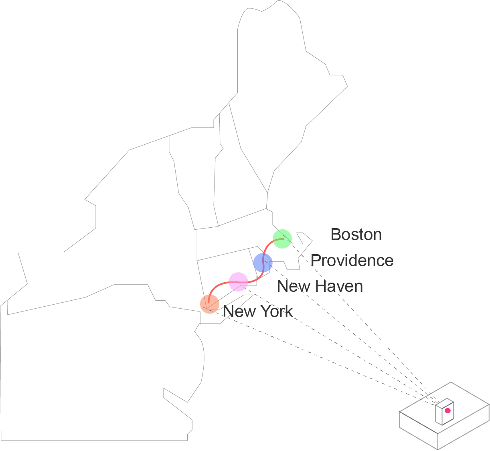

Ajournal about my thanksgiving travel from NYC to New Haven, Providence, Boston.(Nov 21st ~ Nov 28th,2020).The temperatures were recorded using a IOT device called ‘particle’ thermometer.This visualization
highlights the temperature difference between the place I stayed and the places I passed by and the temperature variations among the cities as well during the time.

Temperature by Locations ↓ Click the city to see the temperature difference